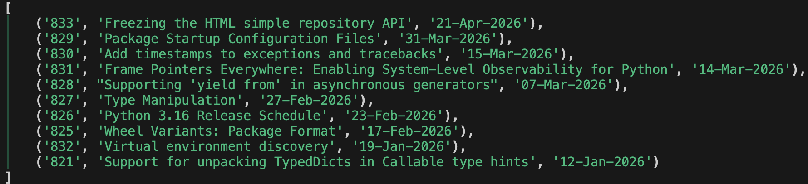

こんなPythonロギングはどうだい！？
- Event:
Tachikawa.any #1
- Presented:
2026/05/12 nikkie
㊗️Tachikawa.any 爆誕！🎂
nikkieと立川
今日は吉祥寺より先まで中央線グリーン車でおトク！
シネマシティ、だいすき！
超かぐや姫！の舞台！！
これすき
彩葉は感動すると
— 『超かぐや姫！』公式 (@Cho_KaguyaHime) 2026年4月29日
放心状態になるタイプのオタクなので
乙女っぽいポーズをしています🦊#GWは超かぐや姫 pic.twitter.com/VAXLiHCYYE
こんなPythonロギングはどうだい！？
% happy-python-logging run --log-config httpxyz=debug example.py最新のPEPを取得するスクリプト
example.pyfrom datetime import datetime
import httpxyz
from rich.pretty import pprint
resp = httpxyz.get("https://peps.python.org/api/peps.json")
data = resp.json()
peps_desc_created = sorted(
data.items(),
key=lambda item: datetime.strptime(item[1]["created"], "%d-%b-%Y"),
reverse=True,
)
pprint([(k, v["title"], v["created"]) for k, v in peps_desc_created][:10])
最新のPEPを取得するスクリプト
HTTPクライアント HTTPXYZ [1]
カラフルな出力 Rich

ライブラリHTTPXYZの作者によるロギング
https://codeberg.org/httpxyz/httpxyz/src/tag/0.31.1/httpxyz/_client.py
logger = logging.getLogger("httpxyz") # L117logger.info( # L1032
'HTTP Request: %s %s "%s %d %s"',
request.method,
request.url,
response.http_version,
response.status_code,
response.reason_phrase,
)仕込まれたロギングを見たい私（束縛系）は
example.py にロギングの実装を追加httpxyz_logger = logging.getLogger("httpxyz")
httpxyz_logger.setLevel(logging.DEBUG)
console_handler = logging.StreamHandler()
formatter = logging.Formatter(
"%(asctime)s | %(levelname)s (%(name)s) | %(filename)s:%(funcName)s:%(lineno)d - %(message)s"
)
console_handler.setFormatter(formatter)
httpxyz_logger.addHandler(console_handler)
2026-05-11 20:32:15,259 | INFO (httpxyz) | _client.py:_send_single_request:1032 - HTTP Request: GET https://peps.python.org/api/peps.json "HTTP/1.1 200 OK"ロガー・ハンドラ・フォーマッタを設定 🏃♂️
PyCon JP 2025 で話しています！ [2]
ボイラープレートコードが多い -> 設定ファイル で外出し
tomllib.load して logging.config.dictConfig に渡します
version = 1
disable_existing_loggers = false
[loggers.httpxyz]
level = "DEBUG"
handlers = ["console"]
[handlers.console]
class = "logging.StreamHandler"
formatter = "detailed"
[formatters.detailed]
format = "%(asctime)s | %(levelname)s (%(name)s) | %(filename)s:%(funcName)s:%(lineno)d - %(message)s"
ところで RUST_LOG っていいですね
$ RUST_LOG=codex_core=trace codex exec "print hello" --skip-git-repo-checkバイナリ実行中のログレベルを外から制御できる！ [3]
RUST_LOG 関係者
-
The
RUST_LOGenvironment variable controls logging with the syntax:
PYTHON_LOG が私は欲しいぞ！
$ PYTHON_LOG=httpxyz=debug happy-python-logging run example.py% happy-python-logging run --log-config httpxyz=debug example.pyhappy-python-logging run
Python使いをロギングで幸せにするために始動
あるライブラリをちょっとロギングしたいだけなのに、 なんで何行も書かないといけないのか （仕組みを理解した上で）
「HTTPXYZは今だけdebugレベルで」
PYTHON_LOG=httpxyz=debug happy-python-logging run example.py
from datetime import datetime
import httpxyz
from rich.pretty import pprint
resp = httpxyz.get("https://peps.python.org/api/peps.json")
data = resp.json()
peps_desc_created = sorted(
data.items(),
key=lambda item: datetime.strptime(item[1]["created"], "%d-%b-%Y"),
reverse=True,
)
pprint([(k, v["title"], v["created"]) for k, v in peps_desc_created][:10])
アイデア runpy.run_path
python path/to/script相当PYTHON_LOGに沿ったロギング設定をしてからスクリプト実行Opus 4.7とGPT-5.5の実装・レビュー 20往復 でこれは消えた...（別の実装に）
まとめ：こんなPythonロギングはどうだい！？
RUST_LOGならぬPYTHON_LOGロギングのコードを書かずにロギングできる happy-python-logging run お試しあれ！
$ PYTHON_LOG=httpxyz=debug happy-python-logging run example.pyご清聴ありがとうございました！
機械学習エンジニア。 Speeda AI Agent 開発（We're hiring!）